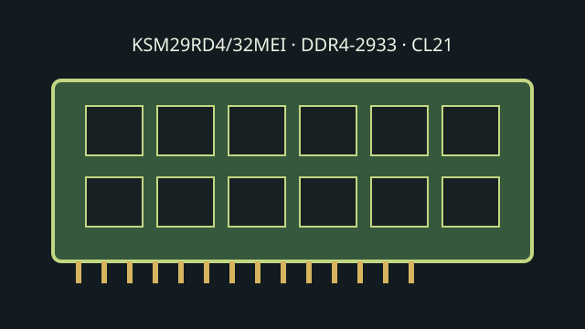

[ KINGSTON SERVER PREMIER // MODEL RECORD ]
KSM29RD4/32MEI
A model-specific 32 GB DDR4-2933 ECC Registered server DIMM. Kingston lists this part for memory-controller platforms that support the matching DDR4 RDIMM class.

Model specifications
| Capacity / module | 32 GB; 288-pin DDR4 DIMM |
|---|---|
| Rank / chip organization | 2Rx4 dual rank; x72 module bus (64-bit data plus 8-bit ECC), x4 DRAM organization. |
| Speed / JEDEC | DDR4-2933, 2933 MT/s (PC4-23400R); JEDEC timing CL21-21-21 at 1.2 V. |
| Voltage | 1.2 V nominal module VDD/VDDQ. |
| ECC / buffering | ECC Registered DIMM (RDIMM) with command/address register. |
| Platform compatibility | Use only in DDR4 server/workstation platforms whose CPU and system board support registered ECC memory. Xeon Scalable 3rd Gen supports DDR4 up to 3200 MT/s, but the host can use a slower SPD rate based on CPU, board, DIMM loading and firmware. Check the exact system QVL for this 32 GB 2Rx4 SKU. |
Service and compatibility notes
- Do not mix RDIMM with UDIMM or LRDIMM unless a system vendor explicitly qualifies that arrangement.
- Confirm supported DIMM-per-channel population, supported rank and maximum capacity before adding modules; these affect attainable frequency.
- Photograph the label and archive the module SPD/revision for future service.
Manufacturer & standards sources
- Kingston — KSM29RD4/32MEI product datasheetSKU-specific data-rate, organization, timing and electrical reference.
- Kingston — Server Premier memory product familyManufacturer product-family compatibility overview.
- Intel — Xeon Gold 6338 specificationsCPU-side DDR4 memory support reference; no claim of exact-module qualification.
- JEDEC — JESD79-4 DDR4 SDRAM standard